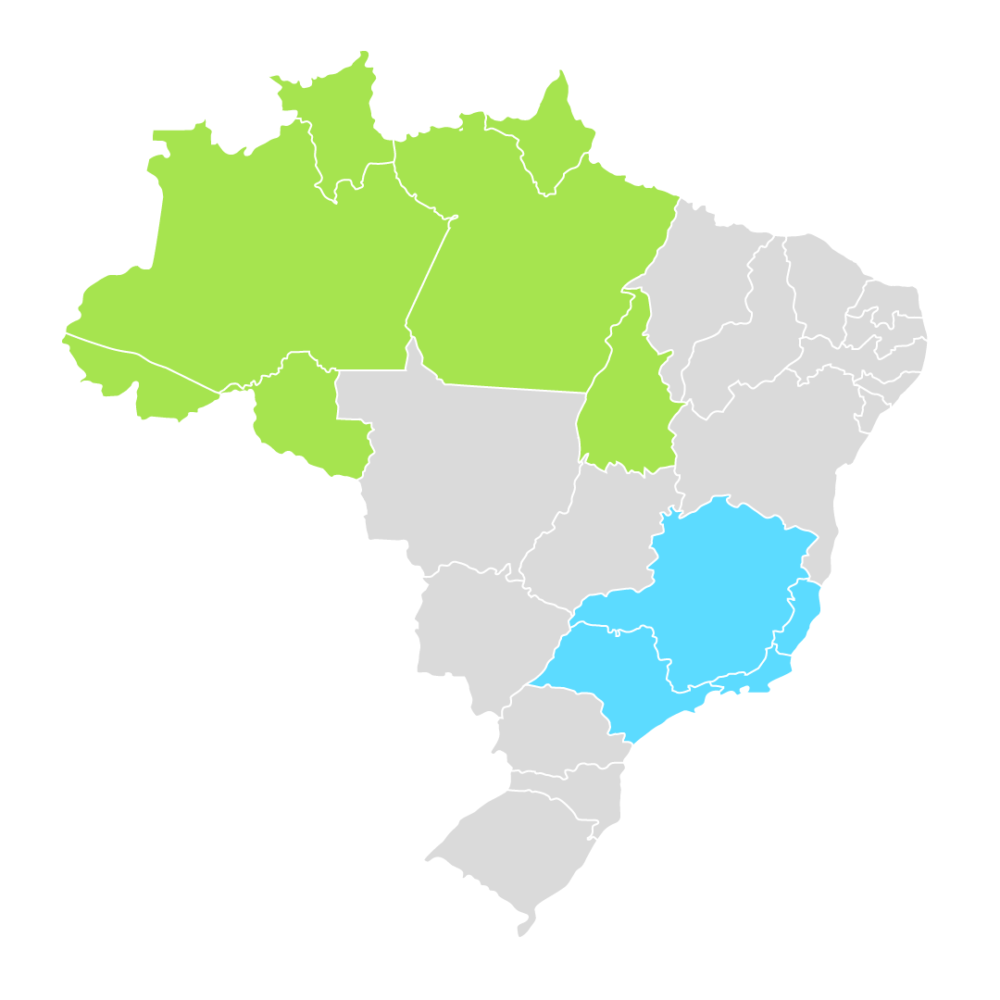
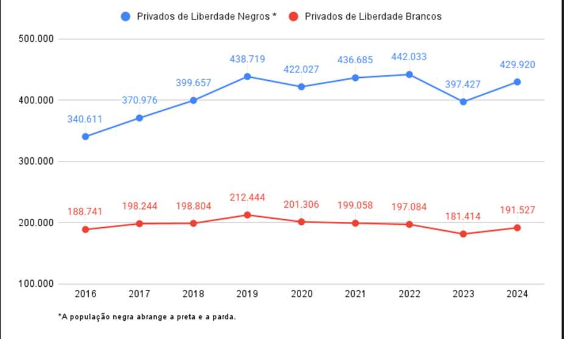
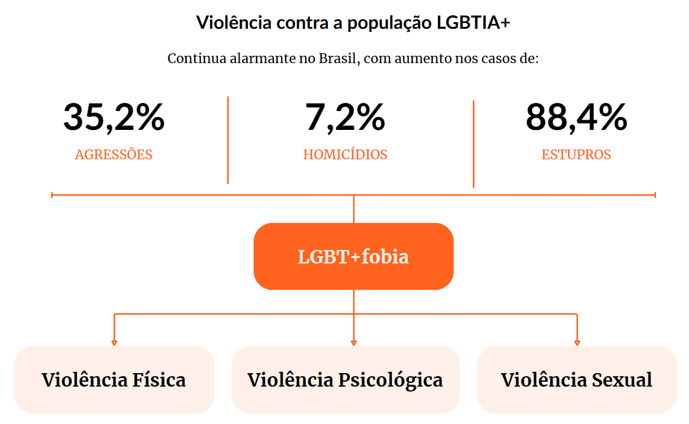
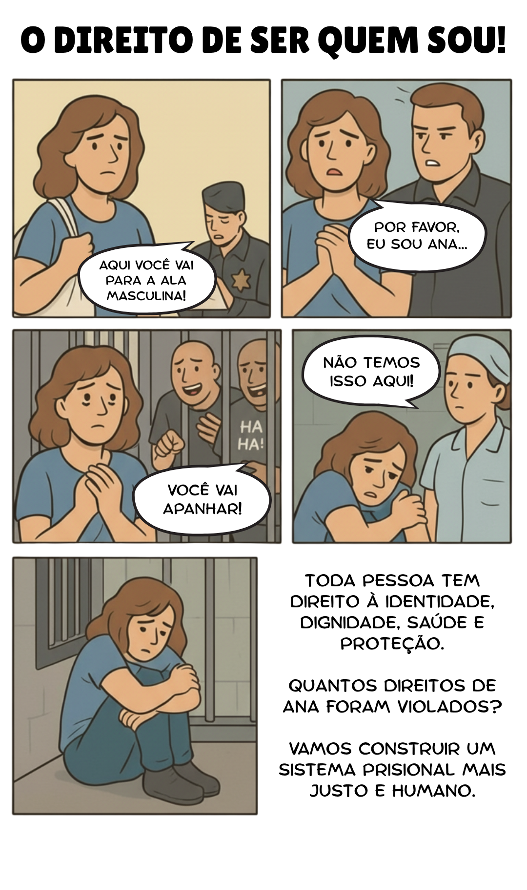
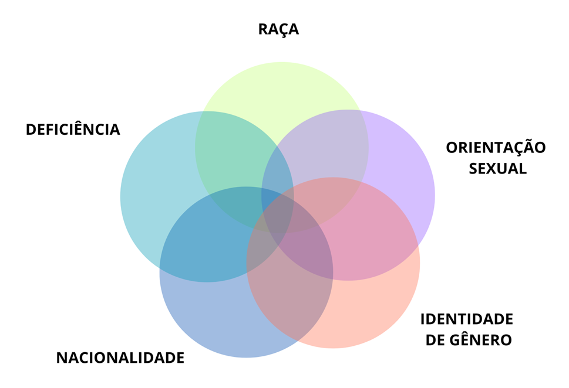

Apresentação da Unidade
Olá, estudante-trabalhador! Seja bem-vindo!
Nesta Unidade, vamos abordar temas importantes sobre os direitos, a saúde e a cidadania das pessoas privadas de liberdade (PPL), com foco especial nas populações historicamente marginalizadas no sistema prisional. O objetivo é ampliar o entendimento sobre como o acesso a direitos e serviços essenciais, especialmente no contexto do sistema prisional, é condicionado por características como gênero, raça, orientação sexual, idade, deficiência e origem social.
Mais do que apenas transmitir informações, esta Unidade propõe um olhar crítico e sensível sobre um tema que atravessa direitos humanos, inclusão e justiça social. Falar sobre saúde e direitos no sistema prisional é falar sobre quem somos como sociedade, e reconhecer o outro como sujeito de direitos é o primeiro passo para transformações reais. Esperamos que essa leitura inspire você, estudante-trabalhador, a refletir, questionar e fortalecer o compromisso com práticas mais justas, humanas e transformadoras.
Objetivos de Aprendizagem da Unidade
Conhecer os direitos das pessoas privadas de liberdade, com foco na promoção da saúde e na inclusão social, considerando a diversidade das populações, como pessoas idosas e com deficiência, no sistema prisional;
Reconhecer a importância da cidadania e da garantia de documentos como RG e CPF (documento único) para as pessoas privadas de liberdade;
Identificar as formas de discriminação, como racismo, LGBTIA+fobia e outras;
Entender a interseccionalidade dos determinantes sociais da saúde e a proteção de direitos e o acesso igualitário a serviços de saúde e proteção de direitos.
Carga Horária de Estudo: 10 horas
3.1 Diversidade e inclusão no sistema prisional: direitos e garantias das populações específicas
A Constituição Federal de 1988 afirma que “todos são iguais perante a lei, sem distinção de qualquer natureza”, assegurando a inviolabilidade do direito à vida, à liberdade, à igualdade, à segurança e à propriedade a todas as pessoas, brasileiras ou estrangeiras. Essa garantia se estende também à população privada de liberdade (Brasil, 1988).
A Lei de Execução Penal (LEP) (Brasil, 1984), em seu Art. 3º, garante ao condenado e ao internado todos os direitos não atingidos pela sentença ou pela lei, determinando que não deve haver qualquer distinção de natureza racial, social, religiosa ou política. Esse princípio reforça que a execução da pena deve respeitar a dignidade e impedir qualquer forma de discriminação. Para além desse contexto nacional, é importante destacar a existência de normativas internacionais que propõem uma série de regras para assegurar os direitos das PPL. Trata-se de um conjunto de diretrizes que estabelecem padrões básicos de dignidade, respeito aos direitos humanos e condições adequadas para as PPL. As regras abrangem desde princípios gerais sobre o tratamento humano, não discriminação e reintegração social, até aspectos específicos como higiene, alimentação, saúde, educação, contato com o mundo exterior e disciplina.
São elas as Regras Mínimas das Nações Unidas para o Tratamento de Reclusos (Regras de Nelson Mandela, de 2015) e as Regras das Nações Unidas para o Tratamento de Mulheres Presas e Medidas Não Privativas de Liberdade para Mulheres Infratoras (Regras de Bangkok, de 2010) (Organização das Nações Unidas, 2015; Conselho Nacional de Justiça, 2016).
A Cartilha de direitos das pessoas privadas de liberdade e egressas do sistema prisional (Brasil, 2023a) reverbera esse debate, abordando com destaque os direitos de grupos historicamente vulnerabilizados, como mulheres, pessoas LGBTIA+, pessoas com deficiência, pessoas idosas, povos indígenas e migrantes e estrangeiros, conforme Quadro 1.
Quadro 1 - Levantamento de dados de grupos historicamente vulnerabilizados
Clique para interagir
Número de mulheres privadas de liberdade: 28.770
Direitos: Direito a ficar em estabelecimentos penais separadas dos homens: entrada de servidores do sexo masculino somente com o acompanhamento de uma funcionária mulher.
Garantias: Saúde baseada em necessidades específicas: fornecimento de absorventes higiênicos; atendimento adequado para gestantes; cuidados com a saúde sexual e reprodutiva.
Fonte: Brasil (2014a, 2024a).Obs.: atentar para os normativos estaduais.
Número de pessoas LGBTIA+ privadas de liberdade: Dados não especificados
Direitos:
Pessoas trans têm direito ao tratamento de acordo com sua identidade de gênero:
ser
chamadas pelo nome social; usar
roupas e manter o cabelo conforme sua expressão de gênero; escolher o
estabelecimento penal mais adequado; solicitar
retificação de documentos.
Pessoas de diferentes orientações sexuais podem optar por permanecer em alas
específicas ou no convívio geral.
Garantias: Direito: à Política Nacional de Saúde Integral LGBTIA+; à terapia hormonal; ao atendimento especializado em ginecologia, urologia, endocrinologia, psicologia e psiquiatria.
Fonte: Brasil (2023b, 2024b).Número de pessoas com deficiências privadas de liberdade: 9.424
Direitos: Amparo pelo Estatuto da Pessoa com Deficiência; direito à acessibilidade nos espaços prisionais.
Garantias: Banheiros adaptados e comunicação interna e externa acessível; transferência para unidades adequadas, se necessário; avaliação em saúde na entrada do sistema prisional; tratamento fora do estabelecimento penal pode ser autorizado quando a unidade não tiver estrutura; serviços de reabilitação e habilitação.
Fonte: Brasil (2002, 2023c, 2024a).Número de pessoas idosas privadas de liberdade: 14.544*
Direitos: Direito à continuidade de tratamentos iniciados.
Garantias: Atendimento prioritário pelo SUS; cuidados especializados em geriatria.
Fonte: Brasil (2006, 2024a).* Cabe destacar que, embora o total identificado de pessoas com 60 anos ou mais seja de 14.544, esse valor pode estar subestimado, considerando que 10.747 registros não apresentaram informação sobre a idade. Essa lacuna pode afetar a precisão da análise etária da população.
Número de pessoas indígenas privadas de liberdade: 1.436 (0,23% da população privada de liberdade)
Direitos: Direito à liberdade de expressão cultural e religiosa; direito à autodeclaração de identidade indígena.
Garantias: Realização de rituais e uso de objetos religiosos; recebimento de alimentos com valor simbólico e cultural; atendimento pela Secretaria Especial de Saúde Indígena (SESAI), respeitando saberes culturais e práticas da medicina tradicional.
Fonte: Conselho Nacional de Justiça (2019) e Brasil (2024a).Número de pessoas migrantes e estrangeiras privadas de liberdade: 2.610 estrangeiros com nacionalidade definida e 1.473 sem nacionalidade definida
Direitos: Direito à documentação migratória (RNM e CRNM) para acesso a serviços; direito à presença de tradutores durante os trâmites legais.
Garantias: Acesso universal ao SUS, sem distinção entre brasileiros e estrangeiros.
Fonte: Conselho Nacional de Justiça (2021) e Brasil (2024a).Garantir os direitos e a dignidade das PPL, especialmente daquelas pertencentes a grupos historicamente marginalizados, é um compromisso fundamental para a construção de uma sociedade mais justa e igualitária.
O reconhecimento dessas especificidades não apenas reforça os princípios constitucionais de igualdade e não discriminação, mas também assegura que o sistema prisional cumpra suas funções de maneira humanizada e respeitosa, seja a de ressocialização, seja a de reintegração social das PPL. O acesso a direitos básicos, como saúde, identidade e condições adequadas de aprisionamento, deve ser continuamente fortalecido, promovendo inclusão, respeito e justiça social para todas as pessoas, independentemente de sua condição.
3.1.1 A população LGBTIA+ no sistema penal: desafios, dados e o papel da equidade
O Ministério da Mulher, da Família e dos Direitos Humanos entregou um relatório sobre o tratamento penal de pessoas LGBTIA+ nos estabelecimentos penais do Brasil em 2020, uma análise essencial para identificarmos o cenário vivido por essa população no sistema. O material destaca as realidades regionais, apresentando exemplos de estabelecimentos penais e alas específicas destinadas a pessoas LGBTIA+ em diferentes partes do país (Brasil, 2020).
A criação dessas alas é um recurso importante para promover a mediação de conflitos e garantir a proteção física. No ambiente prisional, alguns grupos, como ex-policiais e pessoas condenadas por crimes sexuais ou pela Lei Maria da Penha, são vistos como persona non grata e acabam sendo alvos de violência. Muitas vezes, a população LGBTIA+ é inserida nesse mesmo contexto de vulnerabilidade, sendo alvo de discriminação e agressões por parte de outras PPL.
Segundo o relatório LGBT nas prisões do Brasil (Brasil, 2020), o Brasil conta com 1.449 estabelecimentos penais, mas apenas 106 têm celas ou alas específicas para pessoas LGBTIA+. A distribuição regional revela desigualdades:
Clique nos ícones + para interagir

Um dos principais desafios para a formulação de políticas públicas eficazes é a falta de dados confiáveis sobre a real dimensão dessa população nos estabelecimentos prisionais. Muitas pessoas LGBTIA+ privadas de liberdade não se sentem seguras para se autodeclarar, temendo represálias, violência institucional e discriminação por parte de outras PPL e até mesmo de policiais penais. Essa subnotificação impede uma avaliação precisa das condições enfrentadas e compromete ações voltadas à sua proteção e aos seus direitos.
Um ponto que merece atenção é a realidade vivenciada por mulheres trans e travestis em alguns estabelecimentos penais do país. Relatos (Brasil, 2020) apontam para diversas violações de direitos ainda no processo de triagem, como:
O corte forçado de cabelos;
A proibição do uso de roupas que expressem sua identidade de gênero.
Essas ações são contrárias ao que determina a Resolução nº 348, de 13 de outubro de 2020, que assegura o direito de mulheres transexuais e travestis de: “[...] utilizar vestimentas lidas socialmente como femininas, manter os cabelos compridos, inclusive extensão capilar fixa [...] de acordo com sua identidade de gênero” (Conselho Nacional de Justiça, 2020).
Ainda assim, as equipes prisionais justificam essas medidas alegando tratar-se de questões de higiene e que o tratamento deveria ser o mesmo para todas as PPL. No entanto, esse argumento desconsidera o princípio da equidade, que implica justamente ações diferenciadas para garantir o bem-estar de grupos vulneráveis.
Tratar todos de forma igual, ignorando as especificidades, resulta em invisibilização e violação de direitos. O respeito à identidade de gênero não é um privilégio, mas uma garantia legal e uma necessidade para a preservação da dignidade humana.
É interessante pensarmos que, para que esse tipo de situação não se repita, é fundamental:
Formar continuamente as equipes de trabalhadores prisionais, com foco em diversidade e direitos humanos;
Aplicar e fiscalizar as normativas existentes, como a Resolução nº 348;
Reconhecer e valorizar a identidade de gênero como parte essencial da proteção de direitos no sistema penal.
Ainda que tenhamos muitos problemas na manutenção desse público nos estabelecimentos penais, outro ponto precisa de atenção: dados disponíveis indicam que apenas 40% das pessoas LGBTIA+ privadas de liberdade têm visitas cadastradas (Brasil, 2020). Esse número reforça uma das consequências mais marcantes da homofobia e da transfobia: o abandono familiar. Para muitas pessoas LGBTIA+, o aprisionamento representa o aprofundamento de um isolamento social que, em muitos casos, já existia antes da detenção.
A ausência de visitas não é apenas um reflexo do preconceito, mas também um fator determinante na dificuldade de reintegração social dessas pessoas após o cumprimento da pena. Serapioni (2005), Negreiros Neto (2012) e Ribeiro e Oliveira (2022) apontam que o fortalecimento dos laços familiares e sociais é um dos principais elementos para a redução da reincidência criminal. O suporte emocional, financeiro e psicológico de familiares e amigos contribui para que egressos consigam acessar oportunidades de trabalho, habitação e assistência social, reduzindo as chances de retornarem ao sistema prisional.
Com isso em mente, é essencial que a população LGBTIA+ no sistema prisional receba a atenção e a sensibilidade que sua condição exige. Mais do que números, essas pessoas representam um grupo historicamente marginalizado, sujeito a diversas formas de violência e exclusão institucional. Políticas públicas que garantam seus direitos, segurança e dignidade não devem ser encaradas apenas como ações específicas, mas como oportunidades para repensar todo o sistema penal de forma mais humana, inclusiva e comprometida com os direitos fundamentais de todas as PPL.
Resumo do que vimos até aqui:
A Constituição Federal e normas internacionais garantem equidade e dignidade para todos, incluindo para as PPL, com foco na proteção de direitos humanos;
A população LGBTIA+ enfrenta discriminação e a falta de unidades adequadas, que tenham celas específicas;
Tratar grupos vulneráveis de forma diferenciada é essencial para garantir seus direitos e bem-estar, com a necessidade de fiscalização e formação das equipes de trabalhadores prisionais;
Consequências do abandono familiar: a falta de visitas a pessoas LGBTIA+ no sistema prisional reflete o isolamento social, o que prejudica a reintegração e aumenta a reincidência criminal.
Reflexão
Como podemos garantir que todos, independentemente de sua identidade ou condição, tenham seus direitos respeitados no sistema prisional? Será que estamos tratando as necessidades específicas de grupos vulneráveis, como mulheres, LGBTIA+ e pessoas com deficiência, de maneira justa e digna? É hora de repensarmos o sistema penal e buscarmos soluções que realmente assegurem a igualdade e o respeito para todos.
3.1.2 Direito à cidadania no sistema prisional
Você já parou para pensar sobre a cidadania no sistema prisional?
Existe um senso comum de que, ao ser presa, a pessoa perde todos os direitos, mas não é bem assim. Garantir esses direitos é fundamental para a justiça e para a construção de um futuro melhor para todos.
Embora muitas vezes invisibilizado, esse direito à cidadania é essencial para garantir a dignidade e a efetividade da justiça dentro e fora dos estabelecimentos penais. A LEP (Brasil, 1984) assegura a todas as PPL a possibilidade de regularizar sua situação documental, e isso deve ser uma das primeiras providências adotadas pelo Estado ao assumir a custódia dessas pessoas.
A documentação civil básica, como o registro de nascimento, a carteira de identidade (RG), o Cadastro de Pessoa Física (CPF) e a Carteira de Trabalho e Previdência Social (CTPS), é muito mais do que um requisito burocrático.
Esses documentos são instrumentos fundamentais para o acesso a direitos e serviços essenciais. Sem eles, a PPL encontra barreiras para exercer direitos previstos em lei, como a progressão de regime, a remição de pena pelo trabalho, o recebimento de visitas familiares, a inclusão em programas de educação e profissionalização, além da possibilidade de acesso ao auxílio-reclusão, quando se trata de pessoa segurada pela Previdência Social.
Enquanto a pessoa estiver sob custódia, é dever do Estado assegurar que essa documentação seja providenciada. A emissão ou regularização do Registro Civil de Nascimento, por exemplo, deve ser garantida ainda no início do cumprimento da pena, assim como a emissão dos demais documentos que compõem a identidade civil da pessoa. Trata-se de um compromisso com a dignidade e com os direitos humanos; trata-se de reconhecer que a condição de aprisionamento não anula a cidadania de ninguém.
Considerando que a documentação é uma ponte fundamental para a vida em liberdade, ao deixar o sistema prisional, muitas pessoas enfrentam desafios sociais e econômicos severos. Ter seus documentos em dia é o primeiro passo para acessar políticas públicas, buscar emprego formal, acessar o Sistema Único de Saúde (SUS), matricular-se em instituições de ensino e participar de programas de assistência social. A ausência dessa documentação pode significar a continuidade da exclusão social, mesmo fora do sistema prisional.
Outro direito garantido é o direito ao voto. Segundo relatório da Defensoria Pública da União (2023), esse direito é assegurado pela Constituição Federal, inclusive para as PPL que ainda não têm condenação definitiva. No entanto, a ausência de seções eleitorais em grande parte dos estabelecimentos penais, a falta de informação sobre o processo eleitoral no sistema prisional e a escassez de iniciativas voltadas à conscientização das pessoas em situação de prisão dificultam a participação desse público nas eleições. Existem ainda entraves burocráticos e logísticos que tornam o cadastramento e a organização da votação mais complexos, resultando em uma baixa adesão.
Além desses, o direito à cidadania das PPL inclui o acesso à saúde, educação e trabalho, mas, na prática, esses direitos são frequentemente inviabilizados. A Política Nacional de Atenção Integral à Saúde das Pessoas Privadas de Liberdade no Sistema Prisional (PNAISP), criada em 2014, determina que a PPL tenha acesso à saúde, vacinação e medicamentos, mas a falta de profissionais de saúde e a precariedade da infraestrutura comprometem esse atendimento (Brasil, 2014b). Da mesma forma, o acesso à educação e o acesso ao trabalho, previstos na Lei de Diretrizes e Bases da Educação Nacional (LDB) (Lei nº 9.394/1996) (Brasil, 1996) e na LEP (Lei nº 7.210/1984) (Brasil, 1984), são garantias legais que enfrentam barreiras, como a insuficiência de vagas e a falta de políticas eficazes de ressocialização. Sem que as PPL tenham acesso a esses direitos fundamentais, a reintegração social se torna ainda mais difícil, perpetuando ciclos de exclusão e reincidência criminal.
Com isso em mente, vale a pergunta: como podemos falar em justiça social sem garantir direitos básicos, como saúde, educação, trabalho e participação política, para as PPL? Isso não é apenas uma exigência legal, mas um compromisso ético e coletivo. Quando esses direitos são negados, o ciclo de exclusão se amplia, atravessando os muros dos estabelecimentos penais e afetando toda a sociedade.
Confira alguns pontos importantes que vimos até aqui:
Direito à Cidadania e Documentação Civil:
A LEP garante que as pessoas presas tenham acesso à regularização de sua documentação civil, como RG, CPF e Carteira de Trabalho, essenciais para o acesso a serviços e direitos durante e após o período de privação de liberdade. A falta desses documentos perpetua a exclusão social, dificultando a reintegração à sociedade.
Direito ao Voto:
A Constituição Federal assegura o direito ao voto para as PPL, mas a falta de seções eleitorais nos estabelecimentos penais e a escassez de informações dificultam a participação delas nas eleições, resultando em baixa adesão.
Acesso a Saúde, Educação e Trabalho:
Embora esses direitos sejam garantidos por lei, na prática, o acesso a serviços de saúde, educação e oportunidades de trabalho nos estabelecimentos penais enfrenta diversas barreiras, o que compromete a reintegração social das PPL e perpetua a exclusão.
Reflexão
Como podemos promover uma justiça verdadeira se os direitos fundamentais das PPL, como acesso à saúde, educação e participação política, continuam sendo negligenciados? É urgente repensar o sistema prisional, assegurando que todos, independentemente de sua condição, possam exercer sua cidadania plena e ter a chance de reintegração e dignidade.
3.1.3 Racismo, discriminação e o sistema prisional: o que os números não mostram, a realidade escancara
Falar sobre o sistema prisional e o racismo no Brasil é tocar em uma ferida aberta que atravessa séculos de desigualdade e continua viva nas estruturas que moldam nossa sociedade. Quando olhamos para dentro dos estabelecimentos penais, não estamos apenas observando as condições de aprisionamento. Estamos olhando para um reflexo brutal de como o racismo opera silenciosamente e muitas vezes de forma institucionalizada em todas as esferas sociais.
É comum que as estatísticas oficiais deixem de lado informações sobre raça e cor. Porém, a ausência de dados também revela um dado. Ao apagar o recorte racial, o sistema invisibiliza uma realidade evidente: o sistema prisional brasileiro é majoritariamente negro. Esse dado, ainda que muitas vezes omitido nos relatórios, salta aos olhos de quem conhece minimamente a realidade dos estabelecimentos penais.
Mas por que isso acontece? A resposta passa por entender que o racismo não está apenas nas falas ofensivas ou nas atitudes explícitas de discriminação. Ele está, principalmente, nas estruturas que organizam o acesso (ou a falta dele) a direitos, oportunidades e espaços de decisão. Está na educação de baixa qualidade, no desemprego que afeta mais fortemente a juventude negra, na violência policial e no olhar mais punitivo da justiça quando quem está sendo julgado é um corpo negro. Esse contexto dá origem ao conceito de seletividade penal, que é a tendência de o sistema de justiça aplicar leis e sanções de forma desigual, com maior incidência sobre determinados grupos sociais, como pessoas de baixa renda, minorias raciais e étnicas e indivíduos com histórico criminal.
Os relatórios semestrais do SENAPPEN apresentam dados que revelam o sistema prisional brasileiro como um reflexo do racismo estrutural e institucional. Os dados, coletados de 2016 até 2024 (Brasil, 2023d, 2025), mostram que a população negra sempre esteve em maioria no sistema prisional e que essa disparidade só aumentou ao longo dos anos (Figura 1).
Figura 1 - Evolução das populações privadas de liberdade negra e branca no Brasil, 2016-2024

Fonte: elaboração do autor (2025) com base em dados de relatórios (Brasil, 2023d) e RELIPEN (Brasil, 2025).Esses dados indicam que o sistema prisional brasileiro não só reflete o racismo estrutural da sociedade, como também reforça desigualdades históricas, em que negros são majoritariamente condenados sem acesso igualitário à defesa.
Não se trata apenas de números. Trata-se de uma engrenagem que funciona com base em desigualdades históricas. O racismo institucional, muitas vezes naturalizado, faz com que pessoas negras sejam mais paradas, mais suspeitas, mais presas e mais condenadas, mesmo quando as condições são semelhantes às de pessoas brancas. O tratamento dado, a severidade das penas, a ausência de alternativas penais e a falta de políticas de reintegração social contribuem para a manutenção de um ciclo que se repete: exclusão, prisão, esquecimento.
Por isso, identificar o racismo no sistema prisional não é apenas uma tarefa técnica. É um ato de coragem e responsabilidade social. É reconhecer que não dá mais para falar sobre justiça sem falar sobre cor. É compreender que o aprisionamento em massa não é aleatório, mas resultado direto de uma sociedade que insiste em marginalizar quem já nasce em desvantagem.
Romper esse ciclo exige mais do que discursos. Exige visibilidade nos dados, políticas públicas que enfrentem as desigualdades raciais com seriedade e, acima de tudo, um compromisso coletivo com a equidade. É importante que os trabalhadores do sistema prisional busquem formas contínuas de letramento racial. Reconhecer que o sistema prisional é negro é o primeiro passo, mas o mais importante é perguntar: o que estamos dispostos a fazer para que ele deixe de ser?
3.1.4 LGBTIA+fobia: violência, direitos e avanços no sistema de justiça
A violência contra a população LGBTIA+ continua sendo uma realidade alarmante no Brasil. Os dados do Atlas da Violência 2025 evidenciam um aumento nos registros de casos de violência contra pessoas dessa comunidade. De 2022 para 2023, os casos de violência contra homossexuais e bissexuais registrados no sistema de saúde aumentaram 35%, enquanto os casos de violência contra pessoas transsexuais e travestis cresceram 43% (Instituto de Pesquisa Econômica Aplicada, 2025). Esses números refletem não apenas uma escalada na violência, mas também o reforço de uma estrutura social marcada pela intolerância e pelo preconceito.
Essas violências estão profundamente associadas à LGBTIA+fobia, termo que designa qualquer ato de hostilidade, preconceito ou discriminação direcionado à orientação sexual e/ou identidade de gênero de uma pessoa. Segundo Coelho, Desidério e Rocha (2023), a LGBTIA+fobia pode se manifestar de diferentes formas, abrangendo práticas de exclusão, preconceito e violência que atingem pessoas em razão de sua orientação sexual ou identidade de gênero.
No Brasil, a desigualdade estrutural torna essa realidade ainda mais grave. De acordo com o Anuário Brasileiro de Segurança Pública 2022, do Fórum Brasileiro de Segurança Pública, o país tem 2,7% dos habitantes do planeta e foi responsável por 20,4% dos homicídios ocorridos em todo o mundo em 2022 (Fórum Brasileiro de Segurança Pública, 2022). Entre as vítimas, o perfil revela camadas cruzadas de vulnerabilidade: 77,9% eram negras, 50% tinham entre 12 e 29 anos e 91,3% eram homens. A intersecção entre racismo, juventude, masculinidade e identidade de gênero/sexualidade evidencia a urgência de políticas públicas que atuem sobre essas múltiplas violências.
Apesar desse cenário desafiador, a luta da comunidade LGBTIA+ por direitos e reconhecimento tem conquistado importantes avanços, especialmente por meio do Poder Judiciário. O Supremo Tribunal Federal (STF) tem sido um agente fundamental para a garantia de direitos, como:
A possibilidade de retificação de nome e gênero no registro civil para pessoas trans e não binárias, sem necessidade de cirurgia;
A concessão de direitos sucessórios e previdenciários a casais homoafetivos;
A autorização da doação de sangue por pessoas LGBTIA+, superando restrições discriminatórias anteriores.
Além disso, o STF tem reforçado a importância de ensinar sobre diversidade de gênero nas escolas, reconhecendo que a liberdade de ensinar e o pluralismo de ideias são pilares do sistema educacional brasileiro. Isso tem sido confirmado em julgamentos como os das Ações Diretas de Inconstitucionalidade (ADIs) nº 5.537, 5.580 e 6.038, além das Arguições de Descumprimento de Preceito Fundamental (ADPFs) nº 461, 465 e 600.
Um marco histórico foi a Ação Direta de Inconstitucionalidade por Omissão (ADO) nº 26/DF, em que o STF decidiu estender os efeitos da Lei nº 7.716/89 (que criminaliza o racismo) para também abarcar atos de LGBTIA+fobia. Essa medida serve como um instrumento provisório até que o Congresso Nacional aprove uma legislação específica para criminalizar esses comportamentos.
Esses avanços legais representam conquistas importantes, mas também mostram quanto ainda é necessário avançar para transformar a igualdade legal em igualdade vivida. Reconhecer, nomear e enfrentar a LGBTIA+fobia é fundamental para a construção de uma sociedade verdadeiramente inclusiva, na qual ninguém precise temer por sua existência.
A realidade da população LGBTIA+ no sistema prisional, marcada por violências, discriminações e desigualdades no acesso a direitos, nos leva a refletir sobre um conceito fundamental para compreender como essas opressões se entrelaçam: a interseccionalidade. Não basta analisarmos cada fator de forma isolada. É preciso entender como raça, classe, gênero, sexualidade e outras dimensões da identidade atuam juntas, moldando as vivências e ampliando as vulnerabilidades de determinados grupos.
Essa é uma chave essencial para pensarmos a promoção da saúde e a garantia de direitos dentro e fora dos estabelecimentos prisionais. Afinal, os caminhos que levam à exclusão e os que podem levar à justiça social passam pelo reconhecimento dessas camadas cruzadas de desigualdade.
Confira um resumo das diferenças entre ADI, ADC e ADO e estatísticas de violência contra a população LGBTIA+ (Figura 2).
Diferenças entre ADI, ADC e ADO
Ação Direta de Inconstitucionalidade
Tem por objeto lei ou ato normativo, federal ou estadual, cuja constitucionalidade é questionada
Figura 2 - Infográfico ADI, ADC e ADO e dados relacionados à violência contra a população LGBTIA+

Fonte: Tribunal de Justiça do Distrito Federal e dos Territórios (2024) e Cruz (2022).Exercício de fixação

Fonte: elaboração do autor (2025).Estudo de caso para reflexão
Ana é uma mulher trans privada de liberdade, atualmente custodiada em uma penitenciária masculina. Desde sua chegada, ela enfrenta uma série de violências e violações de direitos. Ana foi obrigada a cortar seu cabelo contra sua vontade, não teve seu nome social respeitado nos documentos internos da unidade e sofreu agressões verbais constantes de outros privados de liberdade e, em algumas ocasiões, de servidores.
Além disso, Ana não teve acesso a cuidados de saúde específicos para sua condição, como atendimento psicológico ou endocrinológico adequado. Seus pedidos para ser transferida para uma unidade que respeitasse sua identidade de gênero foram ignorados.
Ana relata se sentir invisível, desprotegida e em permanente risco, tanto físico quanto emocional.
Com base no relato apresentado na história de Ana, assinale a alternativa que melhor representa os direitos que foram violados:
3.1.5 Determinantes Sociais da Saúde e Interseccionalidade: o que molda o acesso aos direitos?
Você já parou para pensar em como diferentes aspectos da nossa identidade influenciam o nosso acesso à saúde? Compreender a interseccionalidade dos Determinantes Sociais da Saúde (DSS) é um passo essencial para garantir a proteção de direitos e a equidade no atendimento.
Os DSS são fatores que influenciam diretamente o bem-estar e a qualidade de vida das pessoas. Eles incluem condições socioeconômicas, ambientais e culturais, como renda, educação, acesso a serviços de saúde, moradia, saneamento, trabalho, alimentação e redes de apoio social. Esses fatores moldam as oportunidades que cada indivíduo recebe e as barreiras que ele enfrenta para manter uma vida saudável, tornando essencial uma abordagem que leve em consideração essas desigualdades para promover a equidade em saúde.
O termo interseccionalidade, criado pela professora e ativista Kimberlé Crenshaw em 1989, nos convida a enxergar como fatores como raça, classe, gênero, orientação sexual e território não atuam isoladamente. Pelo contrário, eles se cruzam e se amplificam, moldando de maneira única as experiências de cada pessoa (Crenshaw, 1989). Reconhecer essas conexões é fundamental para construirmos um sistema de saúde mais justo e acessível para todos (Figura 3).
Figura 3 - Interseccionalidade: o entrecruzamento de Determinantes Sociais da Saúde

Fonte: elaboração do autor (2025).Essas interações têm consequências sobre a saúde. Uma mulher negra, por exemplo, pode sofrer os efeitos não apenas do racismo, mas também do sexismo e da desigualdade econômica. Esses fatores combinados tornam sua experiência de vida e de acesso à saúde muito diferente daquela vivida por uma mulher branca ou por um homem negro. Ao compreendermos essas camadas de desigualdade de forma integrada, conseguimos enxergar com mais clareza os obstáculos enfrentados por populações historicamente marginalizadas.
Embora a saúde seja um direito fundamental, previsto pela Constituição Federal, na prática o acesso aos serviços de saúde de qualidade ainda é marcado por desigualdades profundas. Populações negras, indígenas, LGBTIA+, em situação de rua ou de baixa renda enfrentam barreiras como a distância dos serviços, o preconceito no atendimento, a falta de informação adequada e a ausência de políticas públicas que considerem suas realidades específicas.
Quando pensamos no contexto prisional, essa desigualdade se intensifica. O ambiente prisional, por si só, é adoecedor. A superlotação, as condições precárias de higiene, a escassez de profissionais de saúde e a falta de cuidado humanizado contribuem para o agravamento de doenças físicas e transtornos mentais. Esses temas devem ser aprofundados em módulos futuros, mas desde já é importante entender que o sistema prisional não pode ser analisado de forma separada das desigualdades estruturais que marcam a sociedade.
Para que se avance na garantia do direito à saúde dentro e fora dos estabelecimentos penais, é necessário construir políticas públicas baseadas na equidade, e isso só será possível com uma abordagem interseccional. Somente ao reconhecer e respeitar a diversidade das experiências humanas, considerando os efeitos combinados de diferentes formas de opressão, conseguiremos construir um sistema de saúde verdadeiramente justo, inclusivo e acessível a todos.
Discutir interseccionalidade e DSS é mais do que um exercício acadêmico: é um convite a enxergar a complexidade das desigualdades e refletir sobre o nosso papel na construção de uma sociedade mais justa. Quando olhamos para as populações privadas de liberdade, essa reflexão se torna ainda mais urgente. O sistema prisional evidencia as falhas dos sistemas de proteção social, justiça e saúde. Muitas vezes, a justiça pune com mais rigor quem já vive à margem e oferece menos justamente a quem mais precisa.
Reflexão
- Determinantes Sociais da Saúde como renda, moradia, educação e saneamento influenciam diretamente o bem-estar e o acesso à saúde;
- A interseccionalidade revela como marcadores sociais (raça, gênero, classe, território, entre outros) se cruzam, criando desigualdades específicas;
- No sistema prisional, essas desigualdades se intensificam, evidenciando falhas no acesso a direitos básicos como a saúde.
Com base nas suas leituras, pense em como a sua identidade afeta o seu acesso à saúde. Quais barreiras você enxerga que outras pessoas enfrentam e você não? Como a sociedade pode garantir um cuidado mais justo para quem está em maior vulnerabilidade?
Encerramento da Unidade
Entender que fatores como raça, gênero, classe social, deficiência, orientação sexual e território não operam de forma isolada, mas interagem e aprofundam vulnerabilidades, é o primeiro passo para transformar políticas públicas e práticas institucionais. É também um chamado à responsabilidade: profissionais de saúde, agentes do sistema de justiça, gestores públicos e educadores têm um papel fundamental na identificação e no enfrentamento dessas desigualdades.
Essa discussão não se encerra aqui. Ao contrário: ela precisa continuar em rodas de conversa, fóruns de debate, ações de formação, espaços de cuidado e de escuta etc. A interseccionalidade nos convida a abandonar visões simplistas e abraçar a complexidade das vidas humanas, respeitando suas histórias, seus contextos e suas necessidades.
Por isso, siga investigando. Leia, escute outras vozes, converse com quem vive na pele essas intersecções. Que esse conteúdo seja apenas o ponto de partida para novos aprendizados, novas perguntas e, sobretudo, novas possibilidades de transformação.
Parabéns por concluir essa unidade! Clique no botão "retornar" no canto superior esquerdo para continuar os seus estudos.
Referências principais
BRASIL. Ministério da Justiça e Segurança Pública. Resolução Conjunta CNPCP/CNLGBTQIA+ no 2, de 26 de março de 2024. Estabelece parâmetros para o acolhimento de pessoas LGBTQIA+ em privação de liberdade no Brasil. Diário Oficial da União, 10 abr. 2024b. Disponível em: https://www.gov.br/participamaisbrasil/resolucao-conjunta-cnpcp-cnlgbtqia-n-2-de-26-marco-de-2024-estabelece-parametros-para-o-acolhimento-de-pessoas-lgbtqia-em-privacao-de-liberdade-no-brasil1 . Acesso em: 17 ago. 2025.
BRASIL. Conselho Nacional de Justiça. Cartilha de direitos das pessoas privadas de liberdade e egressas do sistema prisional. Brasília: CNJ, 2023a. Disponível em: https://www.cnj.jus.br/wp-content/uploads/2023/07/cartilha-de-direitos-das-pessoas-privadas-e-egressas.pdf . Acesso em: 9 ago. 2025.
BRASIL. Secretaria Nacional de Políticas Penais. Brasil: relatórios analíticos. 2023d. Disponível em: https://www.gov.br/senappen/pt-br/servicos/sisdepen/relatorios/brasil . Acesso em: 2 set. 2025.
RIBEIRO, L.; OLIVEIRA, V. Reincidência e reentrada na prisão no Brasil: o que estudos dizem sobre os fatores que contribuem para essa trajetória. Brasília: Instituto Igarapé, 2022. Disponível em: https://igarape.org.br/wp-content/uploads/2022/07/AE56_Reincidencia-e-reentrada-na-prisao-no-Brasil.pdf . Acesso em: 2 set. 2025.
Referências
BRASIL. Secretaria Nacional de Políticas Penais. Relatório de Informações Penais. 16º ciclo SISDEPEN, 1º semestre de 2024. RELIPEN. Brasília: SENAPPEN, 2024a. Disponível em: https://www.gov.br/senappen/pt-br/servicos/sisdepen/relatorios . Acesso em: 2 set. 2025.
BRASIL. Secretaria Nacional de Políticas Penais. Relatórios de Informações Penais (RELIPEN). 2025. Disponível em: https://www.gov.br/senappen/pt-br/servicos/sisdepen/relatorios/relipen/relipen-1o-semestre-de-2024.pdf . Acesso em: 2 set. 2025.
BRASIL. Decreto nº 11.843, de 21 de dezembro de 2023. Regulamenta a assistência à pessoa egressa de que tratam os art. 10, art. 11, art. 25, art. 26 e art. 27 da Lei nº 7.210, de 11 de julho de 1984, e institui a Política Nacional de Atenção à Pessoa Egressa do Sistema Prisional. Diário Oficial da União, Brasília, DF, 22 dez. 2023b. Disponível em: https://www.planalto.gov.br/ccivil_03/_ato2023-2026/2023/decreto/d11843.htm . Acesso em: 9 ago. 2025.
BRASIL. Ministério da Saúde. Portaria GM/MS nº 1.526, de 11 de outubro de 2023. Altera as Portarias de Consolidação GM/MS nºs 2, 3 e 6, de 28 de setembro de 2017, para dispor sobre a Política Nacional de Atenção Integral à Saúde da Pessoa com Deficiência (PNAISPD) e Rede de Cuidados à Pessoa com Deficiência (RCPD) no âmbito do Sistema Único de Saúde (SUS). Diário Oficial da União, Brasília, DF, 13 out. 2023c. Disponível em: https://bvsms.saude.gov.br/bvs/saudelegis/gm/2023/prt1526_16_10_2023.html . Acesso em: 9 ago. 2025.
BRASIL. Ministério da Mulher, da Família e dos Direitos Humanos. LGBT nas prisões do Brasil: diagnóstico dos procedimentos institucionais e experiências de encarceramento. Brasília: Ministério da Mulher, da Família e dos Direitos Humanos, 2020. https://www.gov.br/mdh/pt-br/assuntos/noticias/2020-2/fevereiro/TratamentopenaldepessoasLGBT.pdf . Acesso em: 9 ago. 2025.
BRASIL. Ministério da Mulher, da Família e dos Direitos Humanos. Registro civil e documentação básica: população privada de liberdade. Brasília: Ministério da Mulher, da Família e dos Direitos Humanos, 2019. Disponível em: https://www.gov.br/mdh/pt-br/assuntos/noticias/2019/setembro/CARTILHAREGISTROCIVIL_2019_Pop_Privao_de_Liberdade.pdf . Acesso em: 9 ago. 2025.
BRASIL. Ministério da Justiça e Segurança Pública. Portaria Interministerial nº 210, de 16 de janeiro de 2014. Institui a Política Nacional de Atenção às Mulheres em Situação de Privação de Liberdade e Egressas do Sistema Prisional, e dá outras providências. Diário Oficial da União, Brasília, DF, 17 jan. 2014a. Disponível em: https://dspace.mj.gov.br/bitstream/1/361/3/PRI_GM_2014_210.html . Acesso em: 9 ago. 2025.
BRASIL. Ministério da Saúde. Ministério da Justiça e Segurança Pública. Portaria Interministerial nº 1, de 2 de janeiro de 2014. Institui a Política Nacional de Atenção Integral à Saúde das Pessoas Privadas de Liberdade no Sistema Prisional (PNAISP) no âmbito do Sistema Único de Saúde (SUS). Diário Oficial da União, Brasília, DF, 3 jan. 2014b. Disponível em: https://bvsms.saude.gov.br/bvs/saudelegis/gm/2014/pri0001_02_01_2014.html . Acesso em: 9 ago. 2025.
BRASIL. Ministério da Saúde. Portaria nº 2.528, de 19 de outubro de 2006. Aprova a Política Nacional de Saúde da Pessoa Idosa. Diário Oficial da União, Brasília, DF, 20 out. 2006. Disponível em: https://bvsms.saude.gov.br/bvs/saudelegis/gm/2006/prt2528_19_10_2006.html . Acesso em: 9 ago. 2025.
BRASIL. Ministério da Saúde. Portaria GM/MS nº 1.060, de 5 de junho de 2002. Institui a Política Nacional de Saúde da Pessoa com Deficiência. Diário Oficial da União, Brasília, DF, 6 jun. 2002. Disponível em: https://bvsms.saude.gov.br/bvs/saudelegis/gm/2002/prt1060_05_06_2002.html . Acesso em: 9 ago. 2025.
BRASIL. Lei nº 9.394, de 20 de dezembro de 1996. Estabelece as diretrizes e bases da educação nacional. Diário Oficial da União, Brasília, DF, 23 dez. 1996. Disponível em: https://www.planalto.gov.br/ccivil_03/leis/l9394.htm . Acesso em: 9 ago. 2025.
BRASIL. Constituição (1988). Constituição da República Federativa do Brasil de 1988. Diário Oficial da União, Brasília, DF, 5 out. 1988. Disponível em: http://www.planalto.gov.br/ccivil_03/constituicao/constituicao.htm . Acesso em: 9 ago. 2025.
BRASIL. Lei nº 7.210, de 11 de julho de 1984. Lei de Execução Penal. Diário Oficial da União, Brasília, DF, 13 jul. 1984. Disponível em: http://www.planalto.gov.br/ccivil_03/leis/l7210.htm . Acesso em: 9 ago. 2025.
COELHO, G. G.; DESIDÉRIO, P. M. M.; ROCHA, L. P. Afinal, o que é a LGBTfobia? Revista Brasileira de Sexualidade Humana, v. 34, p. 11-15, 2023. Disponível em: https://www.rbsh.org.br/revista_sbrash/article/view/1115 . Acesso em: 2 set. 2025.
CONSELHO NACIONAL DE JUSTIÇA. Resolução nº 405, de 6 de julho de 2021. Estabelece procedimentos para o tratamento das pessoas migrantes custodiadas, acusadas, rés, condenadas ou privadas de liberdade, inclusive em prisão domiciliar e em outras formas de cumprimento de pena em meio aberto, em cumprimento de alternativas penais ou monitoração eletrônica e confere diretrizes para assegurar os direitos dessa população no âmbito do Poder Judiciário. Diário da Justiça Eletrônico do Conselho Nacional de Justiça, Brasília, DF, 9 jul. 2021. Disponível em: https://atos.cnj.jus.br/atos/detalhar/4030 . Acesso em: 17 ago. 2025.
CONSELHO NACIONAL DE JUSTIÇA. Resolução nº 348, de 13 de outubro de 2020. Estabelece diretrizes e procedimentos a serem observados pelo Poder Judiciário, no âmbito criminal, com relação ao tratamento da população lésbica, gay, bissexual, transexual, travesti ou intersexo que seja custodiada, acusada, ré, condenada, privada de liberdade, em cumprimento de alternativas penais ou monitorada eletronicamente. Diário da Justiça Eletrônico do Conselho Nacional de Justiça, Brasília, DF, 15 out. 2020. Disponível em: https://atos.cnj.jus.br/atos/detalhar/3519 . Acesso em: 9 ago. 2025.
CONSELHO NACIONAL DE JUSTIÇA. Resolução nº 287, de 25 de junho de 2019. Estabelece procedimentos ao tratamento das pessoas indígenas acusadas, rés, condenadas ou privadas de liberdade, e dá diretrizes para assegurar os direitos dessa população no âmbito criminal do Poder Judiciário. Diário da Justiça Eletrônico do Conselho Nacional de Justiça, Brasília, DF, 2 jul. 2019. Disponível em: https://atos.cnj.jus.br/atos/detalhar/2959 . Acesso em: 17 ago. 2025.
CONSELHO NACIONAL DE JUSTIÇA. Regras de Bangkok. Brasília: Conselho Nacional de Justiça, 2016. Disponível em: https://www.cnj.jus.br/wp-content/uploads/2016/09/cd8bc11ffdcbc397c32eecdc40afbb74.pdf . Acesso em: 9 ago. 2025.
CRENSHAW, K. Demarginalizing the Intersection of Race and Sex: A Black Feminist Critique of Antidiscrimination Doctrine, Feminist Theory and Antiracist Politics. University of Chicago Legal Forum, v. 1989, n. 1, art. 8, 1989. Disponível em: https://chicagounbound.uchicago.edu/cgi/viewcontent.cgi?article=1052&context=uclf . Acesso em: 2 set. 2025.
CRUZ, E. P. Número de estupros de LGBTQIA+ cresceu 88% em 2021. Agência Brasil, 28 jun. 2022. Disponível em https://agenciabrasil.ebc.com.br/geral/noticia/2022-06/numero-de-estupros-de-lgbtqia-cresceu-88-em-2021 . Acesso em: 10 set. 2025.
DEFENSORIA PÚBLICA DA UNIÃO. Relatório da Defensoria Pública da União sobre o direito ao voto dos presos provisórios. Brasília, 2023. Disponível em: https://direitoshumanos.dpu.def.br/wp-content/uploads/2023/02/Relatorio-da-Defensoria-Publica-da-Uniao-Sobre-do-Direito-ao-Voto-dos-Presos-Provisorios-versao1-.pdf . Acesso em: 2 set. 2025.
FÓRUM BRASILEIRO DE SEGURANÇA PÚBLICA. Anuário brasileiro de segurança pública 2022. São Paulo: FBSP, 2022. Disponível em: https://forumseguranca.org.br/wp-content/uploads/2022/06/anuario-2022.pdf . Acesso em: 2 set. 2025.
INSTITUTO DE PESQUISA ECONÔMICA APLICADA. Fórum Brasileiro de Segurança Pública. Atlas da violência 2025. Brasília, 2025. Disponível em: https://forumseguranca.org.br/wp-content/uploads/2025/05/atlas-violencia-2025.pdf
NEGREIROS NETO, J. M. Importância da família no processo de ressocialização do encarcerado diante das condições do sistema penitenciário no estado do Ceará. 2012. 75 f. TCC (Especialização em Educação de Jovens e Adultos para Professores do Sistema Prisional) - Universidade Federal do Ceará, Faculdade de Educação, Escola de Gestão Penitenciária e Ressocialização, Fortaleza, 2012. Disponível em: https://repositorio.ufc.br/handle/riufc/29226 . Acesso em: 2 set. 2025.
ORGANIZAÇÃO DAS NAÇÕES UNIDAS. Regras mínimas das Nações Unidas para o tratamento de reclusos (Regras de Nelson Mandela). Viena: Escritório das Nações Unidas sobre Drogas e Crime, 2015. Disponível em: https://www.unodc.org/documents/justice-and-prison-reform/Nelson_Mandela_Rules-P-ebook.pdf . Acesso em: 9 ago. 2025.
SERAPIONI, M. O papel da família e das redes primárias na reestruturação das políticas sociais. Ciência & Saúde Coletiva, v. 10, supl., p. 243-253, 2005. Disponível em: https://www.scielo.br/j/csc/a/5BG6sHmKrJFH4jsrvh58V9s/abstract/?lang=pt . Acesso em: 2 set. 2025.
TRIBUNAL DE JUSTIÇA DO DISTRITO FEDERAL E DOS TERRITÓRIOS. Diferenças entre ADI, ADC e ADO. Direito Fácil, 6 dez. 2024. Disponível em: https://www.tjdft.jus.br/institucional/imprensa/campanhas-e-produtos/direito-facil/edicao-semanal/diferencas-entre-adi-adc-e-ado . Acesso em: 10 set. 2025.
Minicurrículo do Autor

Profissional com sólida experiência nas áreas de gestão pública, recursos humanos, planejamento estratégico, políticas públicas e administração geral. Atualmente exerce o cargo de Especialista em Políticas Públicas e Gestão Governamental na Secretaria de Estado de Saúde de Minas Gerais (SES/MG), atuando diretamente na coordenação e implementação de ações de promoção à saúde e políticas de equidade, com foco em populações vulneráveis, como prisional, indígena e negra e em comunidades LGBTQIA+. Administrador Público formado pela Fundação João Pinheiro, com graduações em História e Administração Geral, tem pós-graduação em Inclusão Social e diversos cursos voltados à liderança, diversidade, gestão e inovação. Mestrando em Gestão de Serviços de Saúde pela Universidade Federal de Minas Gerais.